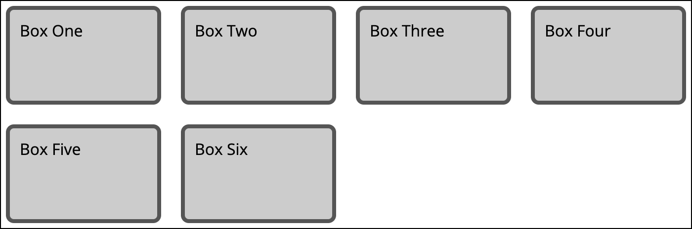
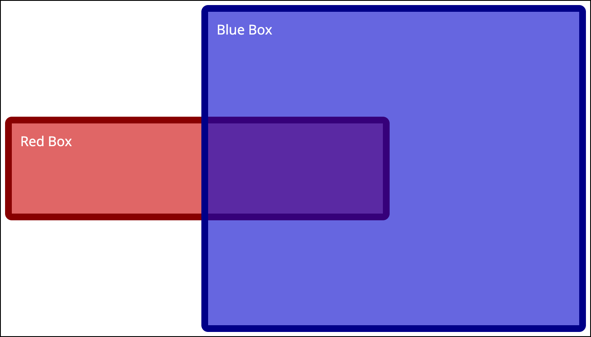
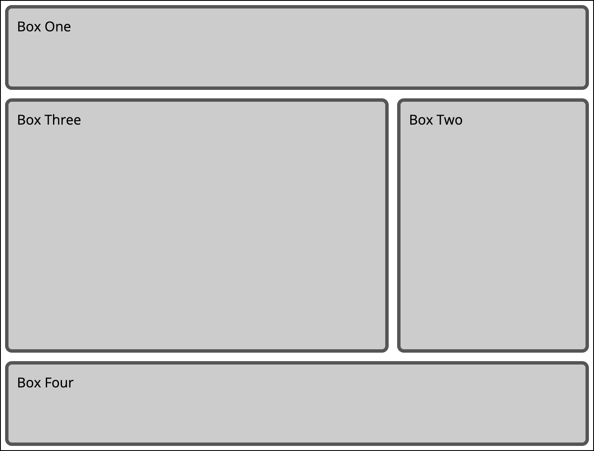

In this lab follow the directions in each part to write CCS rules to match the example image. DO NOT edit this HTML file in any way except to add your name in the H2 in the Header section above this text. DO NOT edit the global.css file in any way. You will write all your CSS in the proper sections in the styles.css file only.
Create a Lab2 folder in your class GitHub repository and place all the files for this lab in that folder, including the assets folder with images. Once you publish this lab to GitHub Pages, submit to the blackboard assignment a link to this main lab page in GitHub Pages and your GitHub repository code.
CSS Flexbox - Part 1
In this section you will try to create a horzontal navigation bar. Finish the CSS in flexbox part 1 in the styles.css file so that the nav bar matches the one below.
The buttons should be in a row and have an equal amount of space inbetween each and at the beginning and end. You should be able to do this by only adding rules to the selector already in the CSS file.
CSS Flexbox - Part 2
In this section you will turn an unordered list of this items into three equal width columns and reorder the columns using only CSS Flexbox. Finish the CSS in flexbox part 2 of the styles.css file so that it matches the example below.
Each column should take up equal space, do not set a width, use flexbox properties to do this. The columns should be reorder as described, do not edit the HTML to reorder. You should be able to do this by only adding rules to the selectors already in the CSS file.
CSS Flexbox - Part 3
In this section you need to do two things. First, you need to center the card item both horzontally and vertically in the box. Next, you need to turn the list of words into something that looks like tags below the image. Finish the CSS in flexbox part 3 of the styles.css file so that it matches the example below.
You should be able to do this by only adding rules to the selectors already in the CSS file.
Clouds
Blue
White
Sky
Card
CSS Grid - Part 1
In this section you need to create a grid where the six child boxes auto place. Finish the CSS in grid part 1 of the styles.css file so that it matches the example below.

The grid should have 4 columns that divide the space evenly and a 20 pixel gap between the columns and rows. The rows should auto-generate and be 100px tall. You should be able to do this by only adding rules to the selectors already in the CSS file.
Box One
Box Two
Box Three
Box Four
Box Five
Box Six
CSS Grid - Part 2
In this section the 3 column and 3 row grid is already defined. You need to position the two boxes in the grid the way they appear in the example. Finish the CSS in grid part 2 of the styles.css file so that it matches the example below.

Make sure the red box and the blue box are positioned in the grid as shown. The blue box should be over top the red box. You should be able to do this by only adding rules to the selectors already in the CSS file.
Blue Box
Red Box
CSS Grid - Part 3
In this section you will turn the four grey boxes into a grid that resembles a typical web page layout. Finish the CSS in grid part 3 of the styles.css file so that it matches the example below.

The grid should be a 2 column grid with 3 rows. The first column should be twice the width of the second column, use fractional widths not fixed with units. The first and last row should be 100px tall and the middle row should be 300px tall. The first and last row should span both columns. There should be a 10px gap between all rows and columns. Pay attention to the order/position of the boxes on the grid. You should be able to do this by only adding rules to the selectors already in the CSS file.
Box One
Box Two
Box Three
Box Four
CSS Transition
In this section there is already a link styled with a hover state that changes the background and text color on hover. You will need to add the correct transition properties to the rules so that the colors change over time instead of instantly when the user hovers. Both the background color and text color should transition. When the user hovers I want to see the transitions happed with a .5 second duration. When the user stops hovering I want to see the transition back to normal happen with a 3 section duration. Finish the CSS in the transition part of the styles.css file.